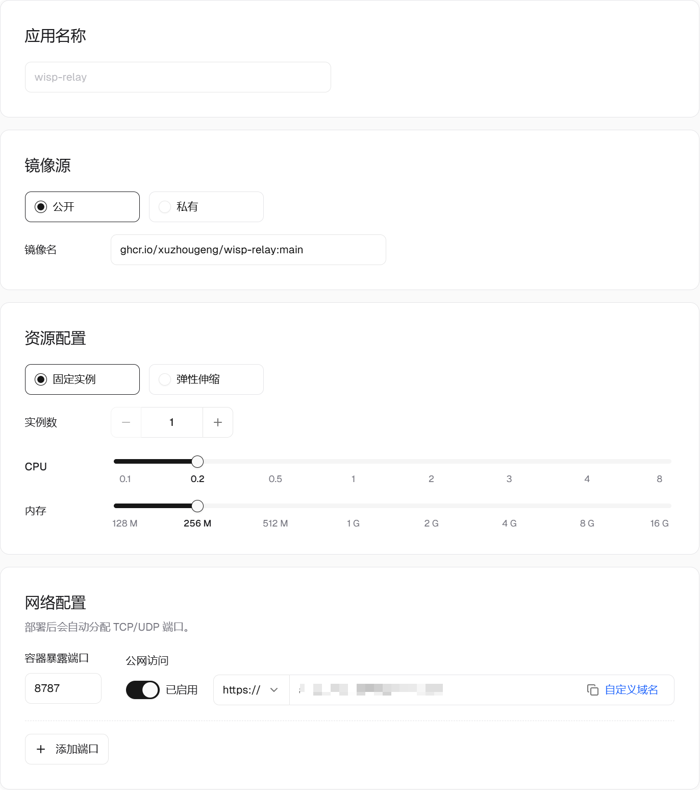

在 Sealos 部署 Wisp 网页远程访问
查看原文把 Wisp 的中继服务部署到 Sealos 后，就可以通过手机或浏览器访问电脑上的 Wisp，查看对话、发送消息、预览文件和处理审批。下面从创建应用开始，完成中继部署、桌面端连接和浏览器验证。
整个连接方式是：
手机／浏览器 ←→ Sealos 中继服务 ←→ 电脑上的 Wisp
Sealos 负责提供网页和转发加密数据，Agent、模型调用和计算任务仍在你的电脑上执行。因此，远程使用时，电脑需要保持联网、避免休眠，Wisp 需要保持运行。电脑主动连接中继，不需要公网 IP，也不用在路由器上开放入站端口。
本文基于 2026 年 10 月 8 日的部署操作。Sealos 配图中的域名已遮挡，Wisp 设置图使用仓库中的演示截图。桌面端需要支持“网页远程访问”功能；该功能在 v1.18.0 之后加入。
第一步：创建应用。
登录 Sealos，进入「应用管理」，点击「创建应用」。按下面的内容填写，操作入口可以参考 Sealos Docker 镜像部署文档。
| 配置项 | 填写内容 |
|---|---|
| 应用名称 | wisp-relay |
| 镜像源 | 公开 |
| 镜像名 | ghcr.io/xuzhougeng/wisp-relay:main |
| 部署模式 | 固定实例 |
| 实例数 | 1 |
| CPU | 0.2 核 |
| 内存 | 256 M |
本次部署核实时，镜像仓库只有 main 标签，使用 latest 会出现 not found。因此，本教程使用已验证可拉取的 main 镜像。main 会随开发分支更新；后续正式版镜像可用时，可以改用明确的版本标签固定版本。
截图中的资源配置可以作为个人使用的起点，后续根据实际用量调整。实例数保持为 1，因为当前中继在单个进程内维护电脑与浏览器的连接配对，多实例可能使两端连接到不同的进程。
第二步：配置网络。
在「网络配置」中填写：
| 配置项 | 填写内容 |
|---|---|
| 容器暴露端口 | 8787 |
| 公网访问 | 开启 |
| 访问协议 | https:// |

图 1：本次成功部署使用的基础配置和网络配置，公网域名已遮挡。
Sealos 会分配一个公网域名，后面需要把这个地址填进 Wisp。本次部署使用截图中的 HTTPS 入口，已经成功建立远程连接，沿用此配置即可。Sealos 负责 HTTPS 入口，不需要另外部署 Caddy 或手动配置证书。
网页远程访问同时使用 HTTPS 页面和 WSS 长连接。如果以后添加自己的反向代理，需要保证同一个域名下的 WebSocket 请求也能转发到容器的 8787 端口。
第三步：配置环境变量。
展开「高级配置」，将「启动命令」和「Arguments」留空，使用镜像自带的启动方式。
添加以下环境变量：
| Key | Value |
|---|---|
WISP_RELAY_TOKEN |
自己生成的一段长随机令牌 |
WISP_RELAY_BIND |
0.0.0.0:8787 |
WISP_RELAY_ROOT |
/data |
如果本地有 OpenSSL，可以在终端用下面的命令生成令牌：
openssl rand -hex 32
Windows 没有安装 OpenSSL 时，也可以在 PowerShell 中生成：
$bytes = New-Object byte[] 32
$rng = [System.Security.Cryptography.RandomNumberGenerator]::Create()
$rng.GetBytes($bytes)
$rng.Dispose()
([System.BitConverter]::ToString($bytes)).Replace('-', '').ToLowerInvariant()
将输出复制到 WISP_RELAY_TOKEN 的值中，并保存好，桌面端需要填写同一个令牌。
仅使用网页远程访问时，不要新增 /data 本地存储挂载。 保留 WISP_RELAY_ROOT=/data 环境变量即可，程序会使用镜像内已有的可写目录。
网页远程访问不需要持久化数据。额外挂载存储卷可能覆盖镜像原有的目录权限，导致容器启动时无法创建目录。如果以后需要项目同步，再单独配置持久化存储，并确保容器用户 10001:10001 有写入权限。
第四步：部署并检查。
点击部署，等待实例进入运行状态。
假设 Sealos 分配的地址是 https://你的应用域名，先在浏览器打开：
https://你的应用域名/healthz
显示 ok，说明中继服务可以访问。再打开：
https://你的应用域名/remote
应看到网页远程访问页面。注意，网页入口是 /remote，不要只用根地址判断服务是否正常。
第五步：连接电脑上的 Wisp。
打开 Wisp，进入 设置 → 远程接入 → 网页远程访问，填写：
| 配置项 | 填写内容 |
|---|---|
| 中继服务器地址 | https://你的应用域名 |
| 中继访问令牌 | 部署时设置的 WISP_RELAY_TOKEN |
| 启用网页远程访问 | 勾选 |
中继服务器地址只填域名，不要加 /remote。点击「保存」。

图 2：桌面端设置示意图，域名和联机码均为演示值。
连接成功后，右侧会显示 “运行中”，下方会出现联机码和远程访问链接。
这里的两种凭据用途不同：
- 中继访问令牌：让电脑上的 Wisp 连接到中继，由你在部署时设置。
- 联机码：让浏览器连接到这台电脑上的 Wisp，由桌面端自动生成。
第六步：在手机或浏览器中使用。
点击 Wisp 中的「复制链接」，在手机或其他浏览器打开。链接形式如下：
https://你的应用域名/remote#你的联机码
也可以打开 /remote 页面，手动输入联机码。当桌面端显示 “已连接的网页：1”，说明已有一个网页接入。
现在可以在网页上打开一个对话、发送一条消息，确认回复能正常显示。远程发起的写文件、改文件和运行命令仍需审批，可以在网页上处理。
联机码和完整访问链接具有访问权限，请像密码一样保管。分享截图前，遮住令牌、联机码和链接中 # 后面的内容。链接泄露时，在桌面端点击「重置联机码」，再复制新链接；旧链接会失效，已连接的网页会断开。
常见问题。
| 现象 | 排查方式 |
|---|---|
拉取镜像提示 latest: not found |
使用本教程的 ghcr.io/xuzhougeng/wisp-relay:main，或确认目标版本标签已经发布 |
提示 Back-off restarting failed container |
查看应用日志；它表示容器反复退出，具体原因以日志为准，有“上一次运行日志”时优先查看 |
| 日志提示令牌缺失或为空 | 检查 WISP_RELAY_TOKEN 是否填写并保存 |
日志提示 Permission denied |
检查 /data 挂载权限；新建且没有同步数据、仅用于 remote web 的应用可移除该挂载，已有同步数据时先保留存储并修复权限 |
/healthz 正常，但 Wisp 连不上 |
核对中继地址、令牌，以及电脑到该域名的网络连接；使用自定义代理时检查 WebSocket 转发 |
| 网页显示电脑离线 | 确认电脑未休眠、Wisp 正在运行且远程访问显示“运行中” |
继续阅读：用手机和浏览器远程使用 Wisp · 网页远程访问部署参考 · 项目同步
With the Wisp relay deployed on Sealos, you can reach the Wisp on your computer from a phone or a browser: read conversations, send messages, preview files and answer approvals. This article starts from creating the app and goes through deploying the relay, connecting the desktop app and checking the result in a browser.
The connection looks like this:
phone / browser ←→ relay on Sealos ←→ Wisp on your computer
Sealos serves the web page and forwards encrypted data. The agent, the model calls and the computation still run on your computer. So while you use it remotely, the computer has to stay online and awake, and Wisp has to keep running. The computer dials out to the relay, so it needs no public IP address and no inbound port opened on a router.
This article follows a deployment done on October 8, 2026. The Sealos screenshot shows the console in its Chinese interface, with the domain masked; the Wisp settings screenshot is the demonstration capture from the repository. Field names for the Sealos console follow its English documentation, and the console's own wording may differ slightly. The desktop app needs remote web access, which was added after v1.18.0.
Step 1: create the app.
Sign in to Sealos, open App Launchpad and create a new app. Fill it in as below; for where each field is, see Deploy Your First App in the Sealos documentation.
| Setting | Value |
|---|---|
| App name | wisp-relay |
| Image source | Public |
| Image | ghcr.io/xuzhougeng/wisp-relay:main |
| Deploy mode | Fixed instances |
| Instance count | 1 |
| CPU | 0.2 cores |
| Memory | 256 M |
When this deployment was checked, the registry only had the main tag, and latest failed with not found. This tutorial therefore uses the main image, which was verified to pull. main follows the development branch; once a release image is available, you can pin an explicit version tag instead.
The resources in the screenshot are a starting point for personal use; adjust them later to what you actually use. Keep the instance count at 1: the relay pairs each computer with its browsers inside one process, and with several instances the two sides may land on different processes.
Step 2: configure networking.
In the network section, enter:
| Setting | Value |
|---|---|
| Container port | 8787 |
| Public Access | Enabled |
| Protocol | https:// |

Figure 1: The basic and network settings of this deployment, in the console's Chinese interface. From top to bottom: the app name, the image, the deploy mode with its instance count, CPU and memory, then the container port and public access. The public domain is masked.
Sealos assigns a public domain, which goes into Wisp later. This deployment used the HTTPS entry shown in the screenshot and connected successfully, so keep that setting. Sealos provides the HTTPS entry; there is no Caddy to deploy and no certificate to configure by hand.
Remote web access uses an HTTPS page and a long-lived WSS connection. If you add your own reverse proxy later, make sure WebSocket requests on the same domain are also forwarded to port 8787 of the container.
Step 3: set the environment variables.
Open the advanced section and leave the startup command and its arguments empty, so the image starts the way it was built to.
Add these environment variables:
| Key | Value |
|---|---|
WISP_RELAY_TOKEN |
A long random token that you generate |
WISP_RELAY_BIND |
0.0.0.0:8787 |
WISP_RELAY_ROOT |
/data |
With OpenSSL installed, generate the token in a terminal:
openssl rand -hex 32
On Windows without OpenSSL, PowerShell can generate it too:
$bytes = New-Object byte[] 32
$rng = [System.Security.Cryptography.RandomNumberGenerator]::Create()
$rng.GetBytes($bytes)
$rng.Dispose()
([System.BitConverter]::ToString($bytes)).Replace('-', '').ToLowerInvariant()
Copy the output into the value of WISP_RELAY_TOKEN and keep it somewhere safe: the desktop app needs the same token.
For remote web access alone, do not add a storage mount at /data. Keeping the WISP_RELAY_ROOT=/data environment variable is enough; the program uses the writable directory that already exists in the image.
Remote web access keeps no data. An extra storage volume can replace the directory permissions that come with the image, and the container then fails to create its directories at startup. If you need project sync later, configure persistent storage separately and make sure the container user 10001:10001 can write to it.
Step 4: deploy and check.
Deploy the app and wait until the instance is running.
Say the address Sealos assigned is https://your-app-domain. First open this in a browser:
https://your-app-domain/healthz
If it shows ok, the relay is reachable. Then open:
https://your-app-domain/remote
You should see the remote web access page. Note that the page lives at /remote; do not judge whether the service works from the root address alone.
Step 5: connect the Wisp on your computer.
Open Wisp, go to Settings → Remote Access → Remote web access, and enter:
| Setting | Value |
|---|---|
| Relay server URL | https://your-app-domain |
| Relay access token | The WISP_RELAY_TOKEN you set when deploying |
| Enable remote web access | Checked |
The relay server URL is the domain only; do not add /remote. Press Save.

Figure 2: The desktop settings, as an illustration. The domain and the connection code are demonstration values.
Once connected, the right side reads “Running”, and a connection code and a remote access link appear below.
The two credentials do different jobs:
- Relay access token: lets the Wisp on your computer connect to the relay. You set it when deploying.
- Connection code: lets a browser connect to the Wisp on this computer. The desktop app generates it.
Step 6: use it from a phone or a browser.
Press Copy link in Wisp and open the link on a phone or in another browser. The link has this form:
https://your-app-domain/remote#your-connection-code
You can also open the /remote page and type the connection code. When the desktop app shows “Browsers connected: 1”, one page has joined.
Now open a conversation in the page and send a message to confirm that the reply shows up. Writing files, editing files and running commands that were started remotely still need approval, which you can give in the page.
The connection code and the full link grant access, so keep them like a password. Before sharing a screenshot, cover the token, the connection code and everything after # in the link. If the link leaks, press Reset code in the desktop app and copy the new link: the old link stops working and connected pages are disconnected.
Troubleshooting.
| Symptom | What to check |
|---|---|
Pulling the image fails with latest: not found |
Use ghcr.io/xuzhougeng/wisp-relay:main from this tutorial, or confirm that the version tag you want has been published |
Back-off restarting failed container |
Read the app logs. The message means the container keeps exiting, and the logs give the actual reason; if the console offers the logs of the previous run, read those first |
| The logs say the token is missing or empty | Check that WISP_RELAY_TOKEN is filled in and saved |
The logs say Permission denied |
Check the permissions of the /data mount. A new app with no sync data that only serves remote web access can drop the mount; with existing sync data, keep the storage and fix its permissions |
/healthz works but Wisp cannot connect |
Check the relay URL, the token, and the network path from the computer to that domain; with a proxy of your own, check that it forwards WebSocket |
| The page says the computer is offline | Make sure the computer is awake, Wisp is running and remote access reads “Running” |
Keep reading: Use Wisp from a Phone or Browser · Remote web access deployment reference · Project sync